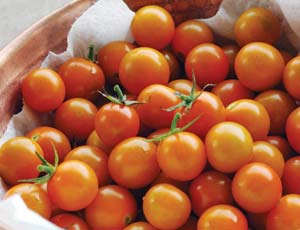

The answer appears to be yes. A new study from the University of California-Davis offers more evidence that organically raised vegetables are healthier than those grown under nonorganic practices that rely on chemicals for fertilization and weed, pest and disease control.
Led by professor and food chemist Alyson Mitchell, the study compared levels of two flavonoids - quercetin and kaempferol - in organic and nonorganic tomatoes. Flavonoids are plant compounds thought to have a variety of health-promoting properties, including protection against cancer, dementia and heart disease.
The results were decisive. Averaged over 10 years, levels of quercetin were 79 percent higher in the organically grown fruit, and levels of kaempferol were 97 percent higher. “We sort of went into this expecting higher levels,” Mitchell told The New York Times. “We did not expect to find the levels that we found.”
The study also found that flavonoid levels increased over time as organic cultivation methods steadily improved soil quality. Average yields in the organic and nonorganic plots were the same.
Efforts are underway to improve flavonoid levels in plant foods through variety selection and genetic manipulations, but this study shows that using organic methods can achieve the same end while also benefiting farmers and our environment.
|
 ALISON ROGERS Organic tomatoes have higher levels of two health-promoting flavonoids, querceting and kaempferol. |
|
|